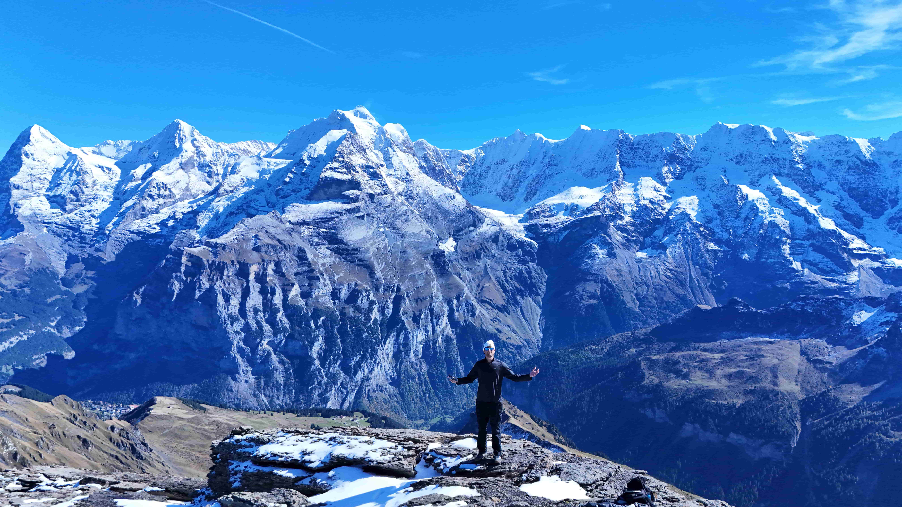

About Me
About Me
I’ve always been the kind of person who loves figuring out how things work. Whether it was building something from scratch or just taking things apart, my curiosity led me to engineering. It’s what drives me to keep learning and exploring new challenges every day. Outside of work, I’m all about growing as a person and making a positive impact on the people around me. I’m happiest when I’m out in nature—whether I’m hiking, fishing, or just enjoying the outdoors. One of my biggest dreams is to travel the world and experience all the amazing things this planet has to offer.
Passions and Hobbies:
Outdoor Adventures: Spending time outdoors is one of my biggest passions. Whether it's fishing during the summer, hiking through nature, or skateboarding in my free time, I always find joy in being active outside. I love exploring new places and seeing everything the world has to offer. There's so much beauty out there, and I try to take any opportunity I can to travel and experience it firsthand. For me, being outdoors is a way to recharge, challenge myself, and embrace new experiences. It’s one of the many ways I try to live life to the fullest.

Mt Baker, Wa

Photography + Videography:
FPV drones were my gateway into photography and videography. I originally got into drones for the engineering challenge. Designing, tuning, and flying something I built was awesome, but chasing better footage pulled me deeper into the creative side. The more I learn, the more I realize how much technical thinking goes into great photos and videos, like camera settings, lighting, composition, stabilization, and editing. Over the past few years I’ve been dialing in that craft and loving this whole new creative path. Traveling has made it even better. Being able to capture places in a way I can share with other people and look back on later has been really special.



Tunring a Passion into a Side Buisness:
Over the past year, I’ve been building a small photo/video side business alongside engineering. What started with drones and FPV naturally grew into broader photography and videography work, and I’ve really loved the challenge of creating content that looks clean, intentional, and tells a story. Real estate has been a big focus and it’s been going well, but I’m always looking to expand into new types of shoots and keep leveling up my shooting and editing skills. I’m excited to keep growing my client portfolio over time while still pushing forward in my engineering career.
If you’ve made it this far, thank you for taking the time to learn a little about me. As you can probably tell, I’m incredibly passionate about what I do, and I aim to carry that enthusiasm into my future career. I’m always on the lookout for new challenges and opportunities that will allow me to grow both personally and professionally. I’m excited for what the future holds and can’t wait to see where my journey takes me next. Whether it’s tackling new engineering projects, building my skills, or stepping into new ventures, I’m eager to continue learning and pushing myself to be the best I can be.


What's Next?